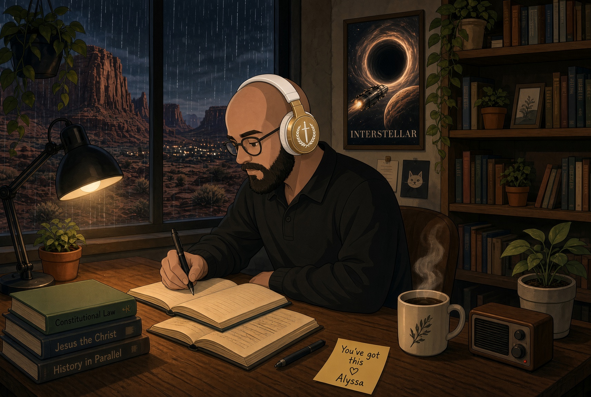

Teaching
Goal
I know everyone uses the word “passion” ad nauseam to describe what they do, or the job they’re trying to get, but I’ve had an honest to God passion for teaching for as long as I can remember. I was lucky to have been surrounded by teachers throughout the years, and fostered with a love for education especially by my mother. I always wanted to teach, but life pushed me in a different direction professionally.
Whenever I’ve had the opportunity to teach, I’ve always taken it. I love teaching in church, I love teaching my children, and I’ve enjoyed volunteering to teach whenever and wherever possible. I am especially passionate about teaching History. I wasn’t a huge fan of History and Social Studies until I had a teacher in High School who you could tell really loved the subject. He sparked that same passion in me, and I want to share that with others.
For the last 20 years or so, I’ve spent time leading work in tech: Agile teams, projects, the daily job of getting people pointed toward the same goal and in the same direction. I now find myself in a position to be able to pivot back to exploring my passion for teaching.
I currently hold a Bachelor of Science in Business Management from Western Governors University, and I’m now pursuing a Master of Arts in Secondary Education with an emphasis in teaching Social Studies; also with Western Governors University. My ultimate goal is to teach Social Studies at a High School or Collegiate level.
Study Sounds Mix

Click this link to open multiple tabs that I run while I study. One click opens rainymood, an outdoor fire crackling video, and a playlist of music that helps me focus. These sounds, overlapped, help me stay focused and on task, and boost my productivity. Your mileage may vary!
If a browser blocks the extra tabs, use the following links.
Licensing
Utah educator license through the Utah State Board of Education.
- License type
- Associate
- Issued
- February 25, 2026
- License area
- Secondary Education (Associate, USBE)
- Endorsements
-
- Social Studies Composite
- Economics
- Geography
- History
- Sociology
Degree
- Completed
- Bachelor of Science in Business Management — Western Governors University
- In progress
- Master of Arts in Secondary Education with an emphasis in teaching Social Studies — Western Governors University
- Aim
- Teach Social Studies at a High School or Collegiate level